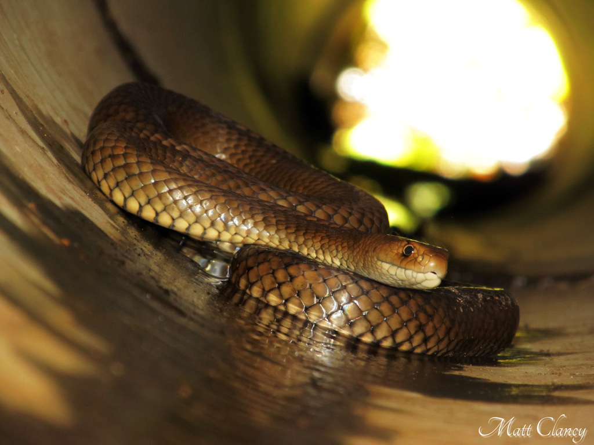

Venom HazardHow dangerous is the venom itself?78.1
Rank
9 of 78
9 of 78
Potency94.2
LD50 of 0.053 mg/kg (SC injection).
Quantity62.0
Up to 67 mg of venom in a single milking.
Eastern brown snake ranks 9 of 78 for Venom Hazard and 14 of 91 for Human Risk.

LD50 of 0.053 mg/kg (SC injection).
Up to 67 mg of venom in a single milking.
Rated 9 out of 10. Very common in farmland and suburbs of eastern Australia.
Level 5 of 5: Strikes readily and repeatedly, or pursues a threat.
Very fast (under 1 h to a few h). Slow onset scores higher because people often delay treatment.
Widely available.
An equal average of Venom Hazard and Human Risk. Always read it with the two scores beside it.
Scores are relative to the species on this site. Bars run from 0 to 100. How these scores are built.
Can cause sudden collapse from cardiovascular effects, sometimes within minutes to an hour, though low venom yield means many bites are milder.
Antivenom source. Australia.
| Measure | Value | Source | Grade |
|---|---|---|---|
| LD50 (mice) | 0.053 mg/kg · SC | Broad, Sutherland & Coulter (1979) Toxicon 17:661-664. Mice, SC. | A |
| Venom yield | 2–67 mg | Ernst & Zug (1996) compilation (secondary); basis not stated; unstated — assumed range across specimens | C |
| Annual deaths | 1.7 a year (Australia 2005-2015, all brown snakes) | Johnston, Ryan, Page, Buckley, Brown, O'Leary & Isbister (2017) The Australian Snakebite Project, 2005-2015 (ASP-20). Med J Aust 207(3). | A |
Built on secondary compilations rather than the original lab studies. The ranking is unlikely to change much, but the exact figures could.
Closest in both Venom Hazard and Human Risk.